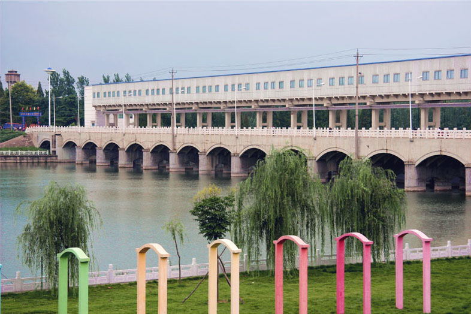
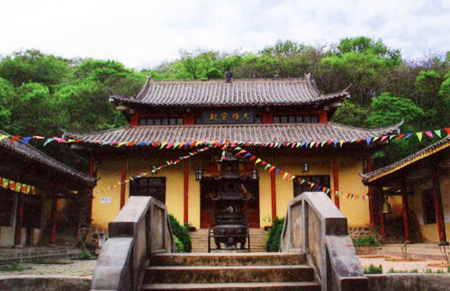
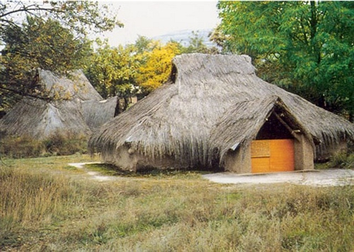
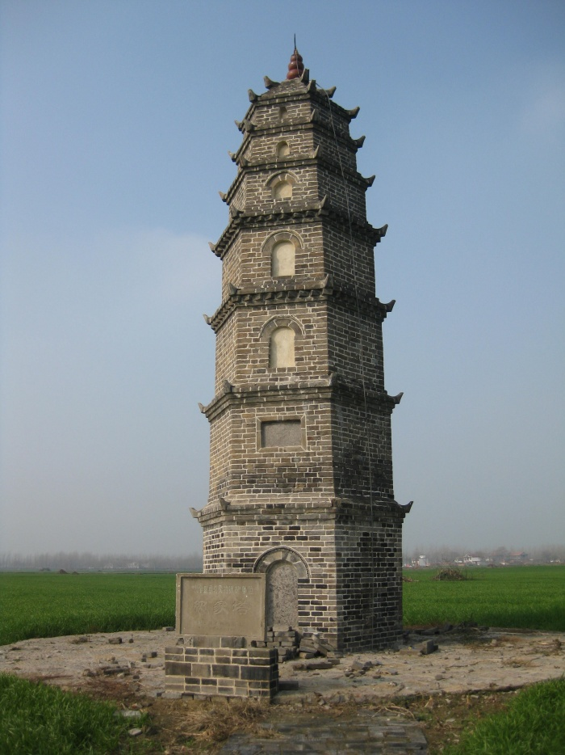
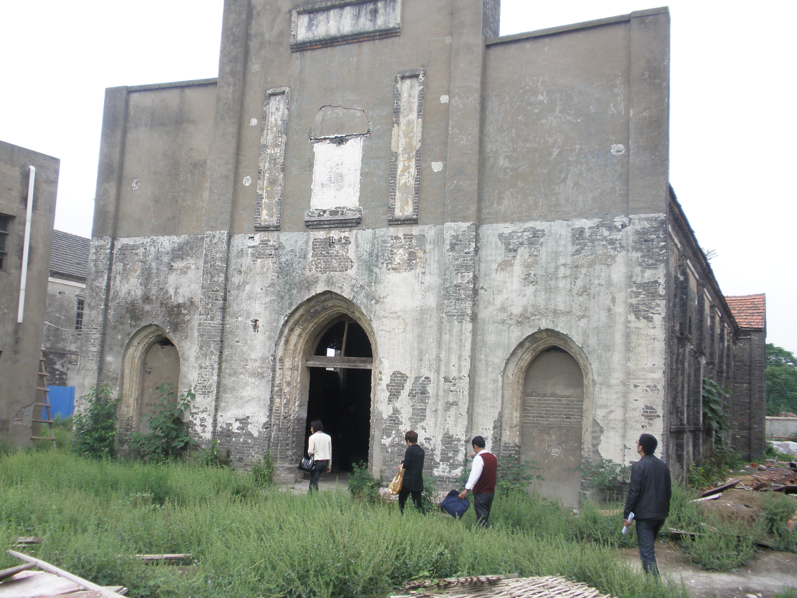
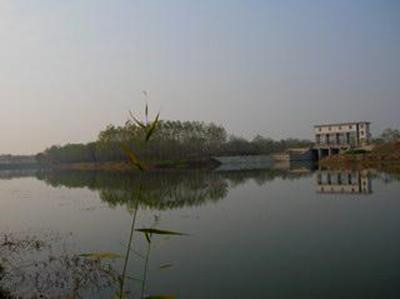

加入收藏
|
英文版
登
陆
首页
景点
热门景点
花戏楼
曹操运兵道
曹操公园
谯城区
花戏楼
曹操运兵道
华祖庵
涡阳县
天静宫
老君殿遗址
蒙城县
万佛塔
利辛县
攻略
亳州简介
攻略集锦
旅游周边
关于我们
网站介绍
联系我们
热门景点
谯城区
花戏楼
曹操运兵道
华祖庵
更多
涡阳县
天静宫
老君殿遗址
张乐行故居
更多
蒙城县
万佛塔
尉迟寺遗址
庄子祠
更多
利辛县
白鹭洲
纪家塔
伍奢冢遗址
更多
旅游攻略
商都亳州，曹操故里
亳州访曹操故里
领略古都的魅力。
安徽亳州之旅
亳州文化游

1.白鹭洲水利风景区

2.禅阳寺遗址

3.伍奢冢遗址

4.纪家塔

5.阚疃天主教堂

6.阴阳城遗址
更多详情
搜索
旅游周边
特色小吃
牛肉馍
蒙城撒汤
涡阳干扣面
特色旅店
亳州宾馆
亳州海顿饭店
新贵都城市酒店
休闲玩乐
魏武广场
涡河公园
亳州一中
交通路线
旅游线路推荐
公交路线
注意事项